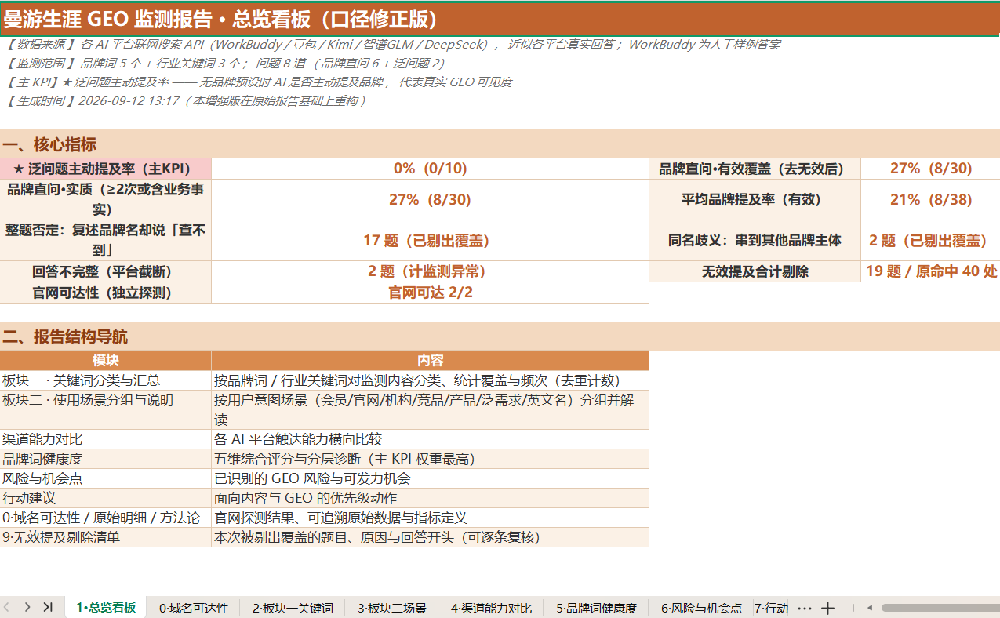
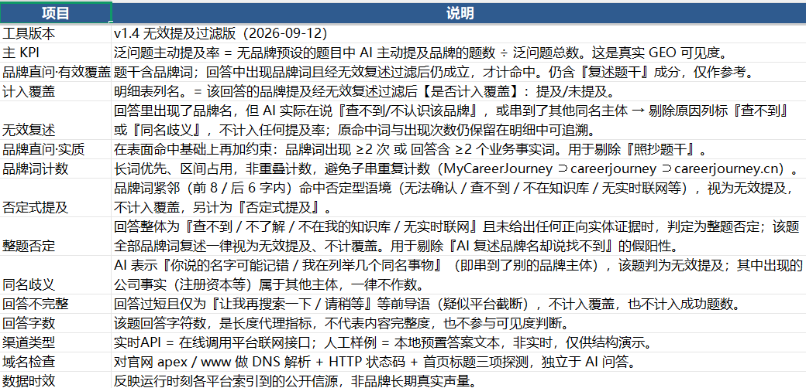
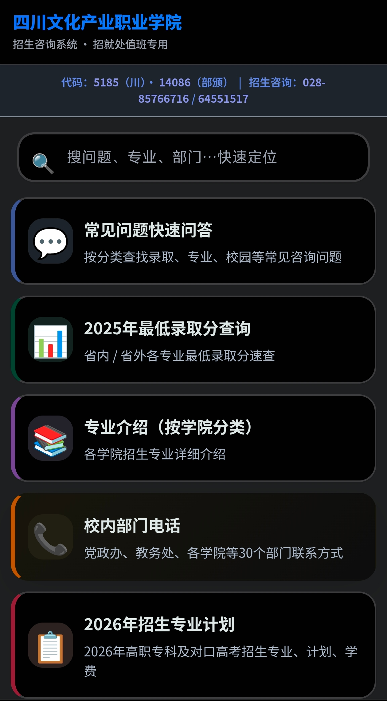
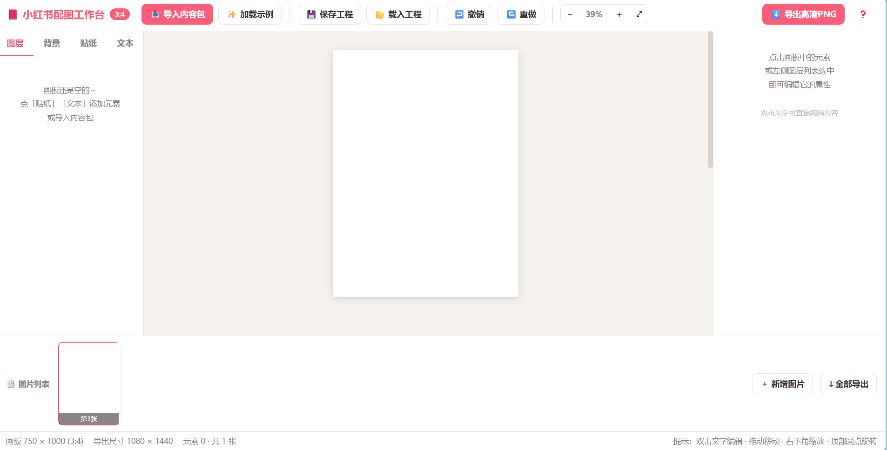
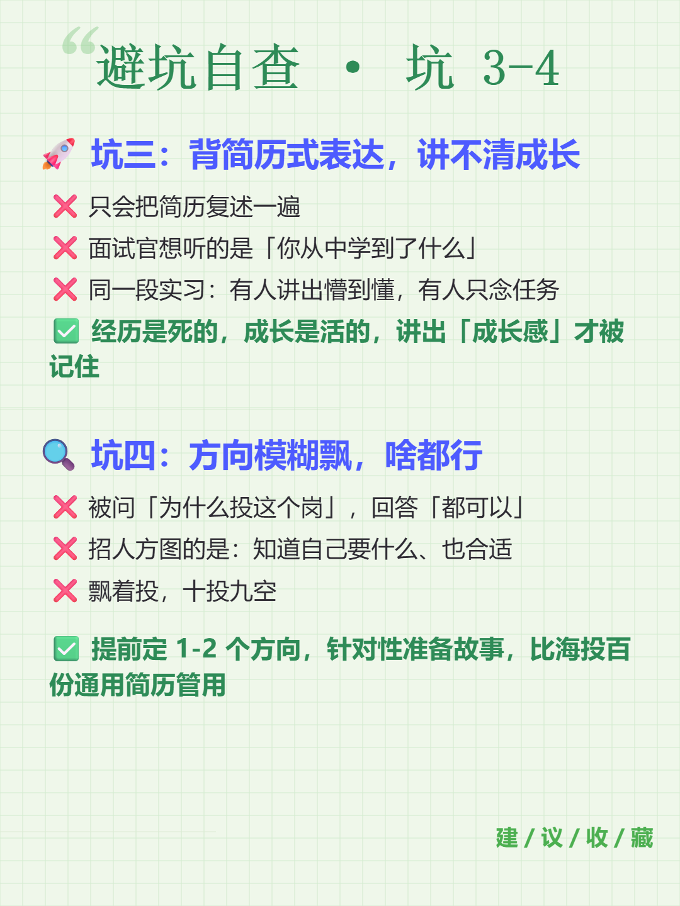
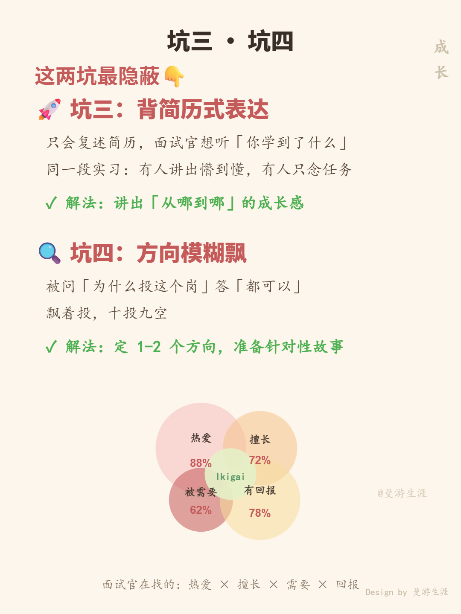
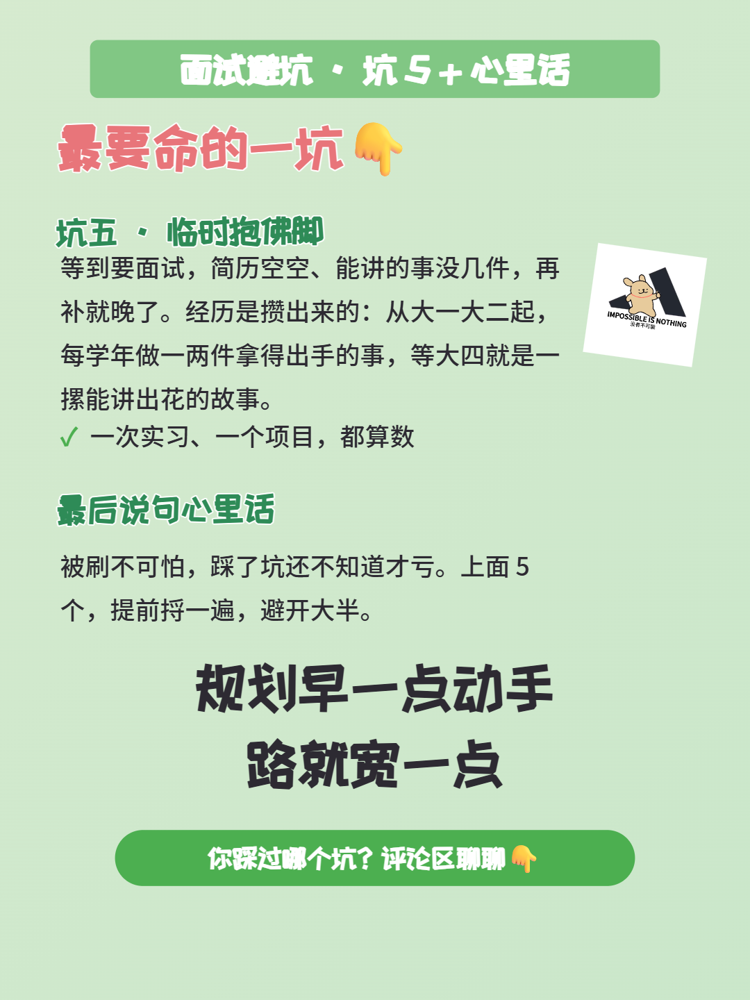

点任意处或按 Esc 关闭
personal site · 2024 级 · 成都
一个人，把想法做成能用的东西
INFJ / SIR。这不是两个标签，是我做事方式的说明书。
我叫姜佳乐，2004 年 10 月出生在四川广安，现在就读于四川文化产业职业学院。
如果只看两个字母和三个字母——INFJ、SIR——大概看不出我是谁。但它们确实是我最近一次自我校准的结果，而且回过头看，我这些年做的选择，基本都在这两个框架里。
INFJ 的四个字母分别是：内向、直觉、情感、判断。翻成我的日常，是这几件事：
这套特质对我的工作影响很直接：它让我能一个人把一个东西从想法做到能用。从需求拆解、技术选型、写到上线，中间不需要很多人接力，这是 INFJ 那种「先在心里把事情走一遍」的习惯换来的。
代价也真实存在——我话不多，也不擅长寒暄。合作的时候，我更希望对方直接说清楚想要什么，而不是先聊二十分钟关系。
霍兰德三个字母，说的是「我喜欢在什么样的环境里做事」。
SIR 和 INFJ 是同一件事的两种说法：一个说我想帮人，一个说我要把东西做出来；一个讲我看得远，一个讲我要落地。拼在一起就是我现在在做的事——写工具、做内容，让人用得上。
中长跑。从初中开始跑，一开始是跟着父亲一起，为了减重；后来是为了中考一千米；再后来，跑这件事本身成了习惯。我喜欢那种持续运动之后的多巴胺，也喜欢跑完一个人慢慢走回去的那段路。跑步和 INFJ 是一回事——都是「一个人，长期，做下去」。
听音乐。写代码的时候耳机基本不摘。音乐是我进入专注状态的开关。
发呆。听起来不像爱好，但对我来说它很必要。N 这个字母需要一个不被打扰的空白时段，把白天收进来的东西重新排一遍。我很多想法的雏形，都是在发呆的时候冒出来的。
现在我是四川文化产业职业学院数字广播电视技术专业 2024 级学生，也是学校招生就业处学生志愿者协会的会长——入学就入了会，今年是第三年，现在带着一群同学做事；同时在曼游生涯，从助理做起，现在做后端开发。明年 4 月，我考专升本。
五件做过的东西。前三件有截图，后两件一笔带过。
2026 · 曼游生涯 · 数据面板与报告生成
一套给品牌做「AI 平台可见度」体检的工具。把品牌词和行业关键词投给豆包、Kimi、智谱 GLM、DeepSeek 等 AI 平台，看它们在真实回答里会不会主动提到这个品牌。
报告拆成总览、关键词、场景、渠道能力、品牌词健康度、风险机会、行动建议、原始明细九块，全部可追溯。其中一个核心判断是：AI 复述了品牌名但紧接着说「查不到」，不能算被看见——这种「假阳性」会被单独筛掉，另列一张可逐条复核的清单。


2025 – 2026 · 招就处值班自用 · HTML / CSS / JS
给招就处值班做的一个查询入口。搜问题、专业、部门都能快速定位，现有常见问题分类问答、2025 年最低录取分查询、按学院分类的专业介绍、校内 30 个部门电话、2026 年招生专业计划五块。移动端优先，值班时手机随手就能查。

2026 · 单文件 HTML · Canvas 编辑器
把文案一次性做成一套小红书图。支持导入内容包、图层 / 背景 / 贴纸 / 文本四类编辑、工程保存与载入、撤销重做、整册导出 PNG。默认 3:4 画布，导出 1080×1440。




2026 – 至今 · EP.001 – 011+ · 多平台短视频
逐字配图稿、TTS 断句稿、三平台配图与封面，整套内容流程自己跑通。
2026 · 多个单文件工具
专升本英语 PWA、FitLife 健康管理、AI 学习仪表盘等。缺什么就写什么，用起来顺手比做得漂亮重要。
不设等级评分，代之以七幅工作场景。每一幅对应一类实际能力，图中的绿袍巫师为统一形象。
团队协作与事务落地
负责学生志愿者协会的整体运转：排班、分工、对外对接与结果验收。
学生组织管理 活动统筹 招就处值班
需求转译与稳定输出
把模糊需求拆成明确的输入、格式与边界条件，让模型稳定产出可用结果。
提示词工程 AI 编程协作 AI 生图 大模型 API
从需求定义到上线
独立完成需求拆解、技术选型、开发与部署，全流程无需多人接力。
Python FastAPI 数据库 HTML·CSS·JS 响应式
从稿件到成片
一份稿件进入，配图、封面与成片在同一流程上完成，脚本与版式同步产出。
短视频脚本 配图与封面 小红书图文 剪辑
统计口径与逐条复核
先统一统计口径，再让结论落回原始记录；模型返回的假阳性单独出清单复核。
GEO 监测 数据面板 口径设计 Excel
持续稳定的执行
长跑从初中延续至今。这条线说明的是：我能把一件事做很久，而不是做一阵。
长期主义 耐力 独立推进
按需学习与工具迁移
工具随需求更换，交付标准不变；实际用过的工具数量远超此处所列。
Word 视觉配色 剪映 各类一次性工具
七幅情景共用同一形象，指向同一个结论：给我一个完整需求，我可以独立完成从定义到交付的全过程。
从初中的团支书，到大学带一个协会；从剪辑和助理做起，到现在写后端、做内容。
2018 年入团。在班里担任团支书，负责团务和班级活动。
继续做班级团支书，同时担任校学生会会长。活动怎么排、人怎么分，从这里开始上手。
2024 级，现大三，2027 年 6 月毕业。
入学后加入校团委和优联协会，做招生就业处的学生志愿者工作。做了三年，现在轮到我带着大家做。
在学校的产教融合基地承接视频剪辑，按交付时间出片。
最先做创始人助理，后来转到开发岗，参与产品后端开发。
系列视频的脚本、台词、配图与封面由我统一产出，多个平台同步发布。
目标：专升本。院校待定。
有想做的事，直接说就行。
不确定算不算你要的，先发一句来问也行。